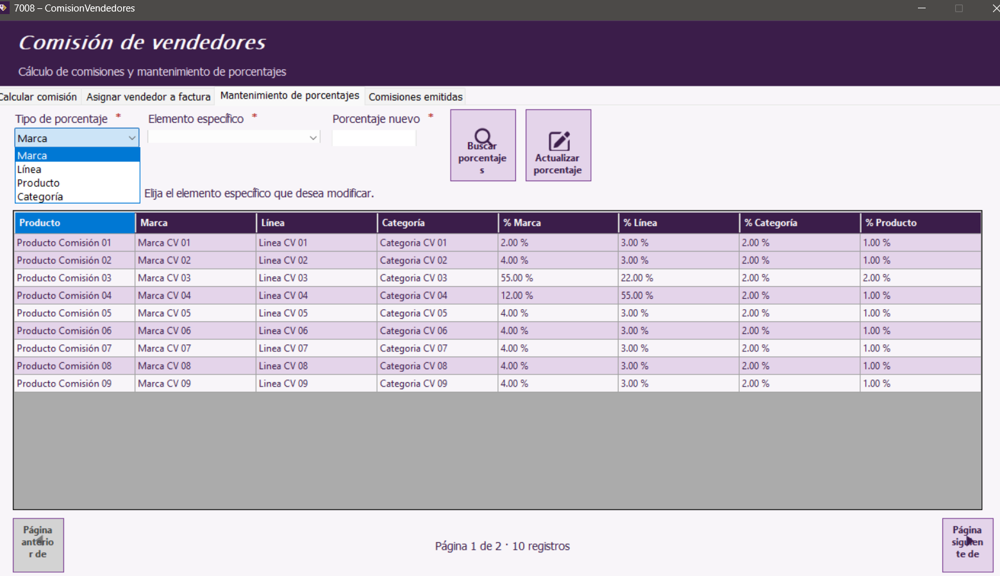
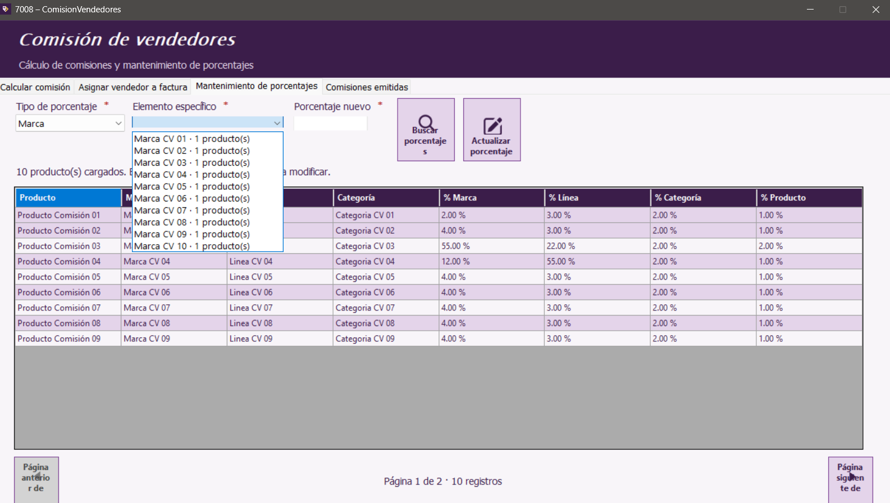
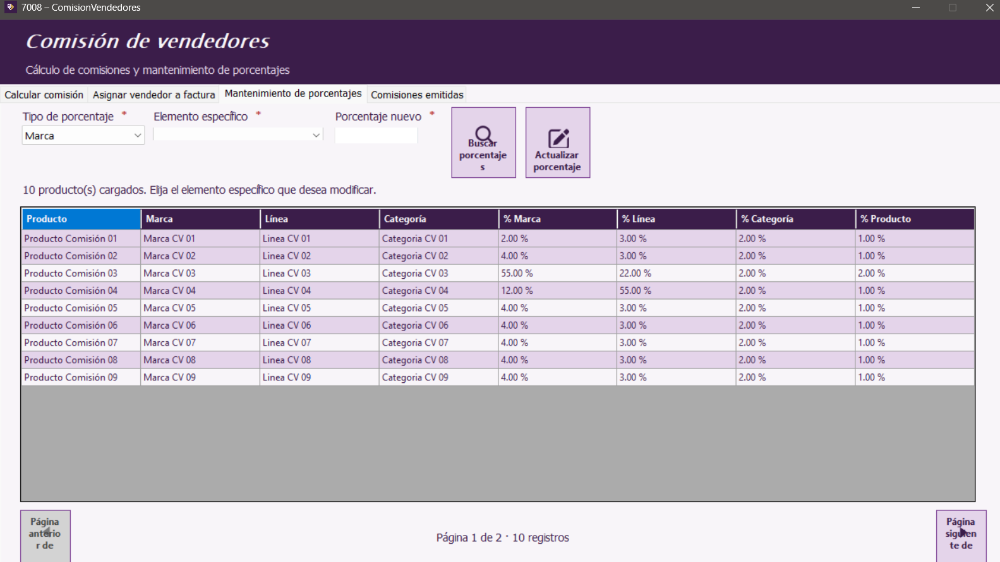

Inicio | Calcular comisión | Asignar vendedor a factura | Mantenimiento de porcentajes | Comisiones emitidas | Botones y mensajes
Buscar porcentajes
- Abre la pestaña Mantenimiento de porcentajes.
- Selecciona el Tipo de porcentaje: Marca, Línea, Producto o Categoría.
- Pulsa Buscar porcentajes para cargar los elementos disponibles.
- Selecciona el Elemento específico que deseas revisar o modificar.

El tipo determina la clase de elemento que vas a buscar.

El selector muestra los elementos disponibles y, cuando aplica, cuántos productos están asociados.
Actualizar un porcentaje
- Con el elemento seleccionado, escribe el nuevo valor en Porcentaje nuevo.
- Revisa el valor ingresado y pulsa Actualizar porcentaje.
- Confirma el resultado en el mensaje de estado y en la tabla.

La tabla permite revisar los porcentajes actuales por clasificación.
Los campos con asterisco rojo son obligatorios. Selecciona primero el tipo y el elemento; el botón de actualización requiere un porcentaje válido.
Manual de usuario · Comisión de vendedores · Aplicación de Ventas y cuentas por cobrar